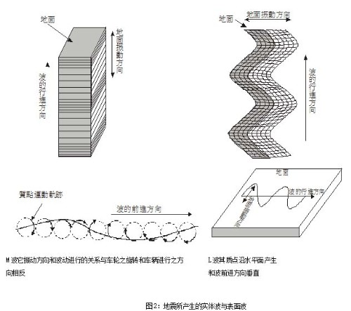
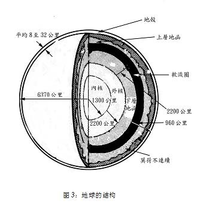
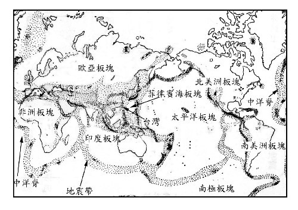
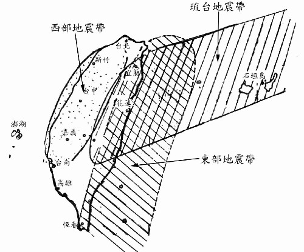
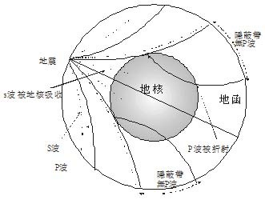
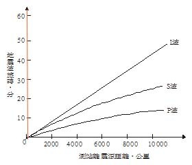

地震与核能电厂
上篇：地震漫谈
一、 前言
地震是人类的主要天然灾害，当地面振动剧烈时，它可破坏房屋及其他建筑物，并常使人类生命财产蒙受严重损失。有时在一瞬间使繁荣的都市变成废墟，自古以来就被人类所关心。三十几年前（1976）的大陆发生芮氏规模8.2的唐山地震，震惊全世界，死亡人数据大陆当局报导为24万人，但外国专家估计达80万人。最近几年地震更加频繁， 1995年由日本阪神首先揭开序幕，接着1999年8月土耳其发生大地震，1个月后（9月21日）发生震惊国人的集集大地震，一时之间人人谈地震变色。这几个发生地震的地区皆属于世界的地震带。台湾位于环太平洋地震带上，生活在地震带上的人更应对地震有应有的认识并具备预防地震的知识才能临危不惧，减轻灾害。
核能电厂为了避免在强烈地震时，遭受损害，造成严重事故，使辐射外泄危及厂内员工及附近居民，因而有其严格的厂址选择与防震设计，此为核能电厂从业人员所必须认识。
注：以上是笔者2000年在台湾921集集大地震后所写，921后世界又发生多起大地震，著名的有二，即：2004年12月26日的印度洋大地震（又称南亚海啸）；2008年5月12日的汶川大地震（大陆四川），附带提起2007年7月16日，发生在日本中越冲(即柏崎刈羽核电厂附近)，发生芮氏规模6.8大地震，该该次地震对日本核能电厂的设计与运转冲击极大。
二、地震原因
地震以其起因的不同可区分为下列三类:
(一) 构造性（Tectonic）地震
因板块移动或造山运动（也是板块移动的一种，二板块互相挤压造成，如喜玛拉雅山的增高）造成地表变形所引起的地震。此类地震占全世界百分之九十以上的地震，且是大地震发生的主因。本文所要讨论是此现象所引起之地震。
(二) 火山(Volcanic)地震
伴随火山爆发所引起的地震。
(三) 地球表面受到冲击(Impact)所引起的地震
冲击地震之发生主要原因是地面受到扰动而产生，如表面爆炸、陨石撞击、塌陷等皆是。
三、震央、震源与地震波
(一) 震源、震央、震源深度与震央距离
地震产生的地点叫做震源（hypocenter），由震源垂直向上与地球表面之交点叫做震央（epicenter），震源至震央之距离叫做震源深度，而震央沿地球表面至观测站之距离叫做震央距离（如图1）。
大部份地震因为都是沿断层突然移位，并将过去一段时期内所累积的能量以实体波(Body Wave)（P波、S波）及表面波（L波、M波四种波）的方式将能量释出（如图2）。
地震时震源会产生一种弹性波，也叫实体波，此波包括纵波及横波，及沿地球表面传播的波叫做表面波，实体波中因纵波最先到达观测站故叫做第一波(Primary Wave)，简称P波，这种波常会使人感觉到地面会上下跳动，而横波叫做第二波(Secondary Wave)简称S波，它会使地面水平晃动。另外也产生表面波（surface wave），表面波亦分为雷利波(Rayleigh Wave)又称M波和拉夫波(Love Wave) 也称L波，拉夫波会引起缓慢的水平摆动，雷利波它振动方向和波动进行的关系与车轮之旋转和车辆进行之方向相反，引起波浪式的前后上下摇滚运动。就破坏性而言表面波比实体波大许多。但由于地震时，三种波的传播速度由快而慢分别为P波、S波、表面波。所以地震时首先感觉激烈上下的振动，其次水平的振动，接着缓慢的水平摇摆，最后才是缓慢的前上后下的摇滚振动。
(三)浅层与深层地震
地震震源深度没有超700公里的，大部分震源深度都发生在70公里以下，一般将震源深度在0~30公里者称为极浅地震，在31~70公里者称为浅层地震，在71-300公里者称为中层地震，超过300公里者为深层地震。浅层地震较深层地震灾害较严重。
四、地震规模（Magnitude）与震度(Intensity)
(一) 地震规模
1. 芮氏规模
地震规模是指地震时所释放的能量多寡。地震学家所采用的方法是I935年由芮克特(Richter)教授所提出，称为芮氏规模。其定义为：在一标准扭力式之伍德安德森(Wood Anderson)地震仪于距离震央100公里处所纪录的最大振幅(以微米表示 )之对数值。芮氏对美国加州 200-1500公里之浅地震研究结果，发现芮氏规模与伍氏地震仪之最大振幅之经验公式为:
M = log A - log Ao
式中 M : 规模
A : 某次地震在观测站用伍氏地震仪量到之最大振幅(单位为微米 )
Ao : 标准地震在同观测站用伍氏地震仪量到之最大振幅(单位为微米)
对台湾近地地震之规模计算公式，徐明同博士推算为：
M=log A 十1.09 log Δ十0.5
式中 A=水平分量最大振幅合成值(单位微米)
Δ= 震央距离(单位公里)
因此，从上述之叙述可知目前若有人报导「芮氏地震仪xx级」，实在是错误，因芮氏并无制造地震仪且规模是以整数及整数后面第一位数字小数点表示，同时"级"是指震度（Intensity）而非指规模（Magnitude）。因此921集集地震的报导应为： 9月21日凌晨1点，台湾发生芮氏规模7.3地震。
2.芮氏规模与地震释放能量
以地震波释放出来的能量（单位：尔格）和芮氏规模之间，据加坦博格（Gutenberg）表示它们彼此之间有下列关系：
log EM = 11.8 + 1.5 M…………………………（1）
EM是规模M时的地震释出能量。
由（1）得log EN = 11.8 + 1.5 N…………………（2）
EN是规模N时的地震释出能量
（2）-（1）得： log（EN / EM）=1.5（N - M），
即：
EN / EM = 101.5（N - M）……………（3）
由式（3）可知规模每增加0.2，能量增加一倍；规模每增加0.69，能量增加十倍；规模每增加1，能量增加三十倍；规模8是规模6能量的一千倍；如以核能电厂发电量计算，一个规模8.5的强烈地震需要核四厂两部机全功率运转四至五年，原子弹的威力非常强大，实验证明一个相当两万吨黄色炸药的中级原子弹（8x1020尔格）在坚硬花岗岩中爆炸，所得结果和规模6的地震相当（6.3x1020尔格），因此如果是发生规模8的地震，相当于投下一千颗的原子弹。
地震之大小若以规模区分则M<3者称为微地震，3≦M<5者称为小地震，5≦ M<7者称为中地震，M比7大者称为大地震，从过去发生之地震规模与每年发展的频率，可得下述分布情形：
1. M在9以上的超强激烈地震：
自芮氏地震规模被采用以后，9.5以上的地震从未发生过，其实连世界上是否曾经发生过9以上的地震，目前仍在争论中。因为历史上公认最大的地震，它发生在1960年智利，其规模最高有人测到9.5，但也有人认为只是8.9，该次地震无疑极为强烈，因为在短短一天半内规模8以上的地震至少发生3次以上，地面形状的扭曲和海啸的巨大，也是世界上罕见的。纵使如此，从1935年芮氏规模被采用后也只有1960年智利的9.5，1964年阿拉斯加的9.2，以及1952莫斯科的9.0被测到超过规模9的地震。
2. M在 8.5~8.9之极大地震：
全世界约每10年一次。
3. M在 8~8.4之强大地震：
如震央在陆上会造成大灾害，如震央在海底会引大海啸，全世界每年平均一次。
4. M在 7~7.9之大地震：
如震央在陆上曾造成大灾害，如震央在海底会引起海啸，全世界每年平均廿次。
5. M在 6~6.9之地震：
如震央在陆上会造成灾害，且世界上任何主要测站皆可测得，每年平均大约是 150次。
6.M在 5~5.9之地震：
有感区域相当大，震央附近会造成灾害，年约800次。
7.M在 4~4.9之地震：
属有感地震，但不发生灾害，年约 6200次。
8.M在 3~3.9之地震：
距离震央较近的人可感觉到，每年约 49000次。
9. M在 2~2.9之地震：
在震央附近的人亦可能无感觉，但测站可测到，每年约30万次以上。
10.M在1~1.9之地震，使用高倍率地震仪可测到。
11．M在1以下之地震，设在适当地点之高倍率地震仪可测到。
(二)震度和级数:
震度是表示地面振动程度，一般与加速度有关，地震学家喜欢用级数或gal (1gal=1cm/sec2 )来表示，震度愈大，地面上所感受到的振动愈激烈，设备及建筑物所遭受破坏程度也愈大，一般距离震央愈近，震度愈大，破坏力亦愈强，震度级数以正整数表示之，表I是世界各国所实行地震震度分级比较表。
从表上可知台湾震度级数系沿用日据时代之分类，分为 0~6级，第6级大于250gal，而日本后来又将6级分为6、7两级，欧美国家多数采用修正之麦卡里震度阶，其将震度分为12级，以大写罗马数字表示。1963年 Medvedev、Sponheup、Karnik 三人共同提倡的MSK震度阶级，因其较能表示定量精神，故为联教组织(UNESCO)所采用。
（三）地震规模及震度关系
一般人常将规模与震度混淆，所谓规模是表示地震时释放能量之大小，在地震发生时规模只一个值，且不随地震测站而改变，但震度会随地震测站与震央距离而改变，地震规模愈大，则释放能量愈大，震度也愈大，引起灾害也愈大。当然要摧毁一座建筑物，最关心的是此建筑物所能承受之最大震度，但是只知道芮氏地震规模并无法推算该建筑物所承受的震度，必须充分了解震央位置，震源深度，地震波传播时之地质特性及该建筑物结构等才能推算震度与耐震程度，一般而言，同一地区地震规模愈大，距离震央愈近之浅层地震其震度愈大。
|
震度
|
名稱
|
震動程度
|
台灣現有震度階
|
日本震度階（1949）
|
新MERCALLI震度階（1956）
|
CANCANI震度階（1903）
|
MSK 震度階（1964）
|
|
0
|
無感
|
地震儀有記錄，人體無感覺。
|
0
0.8gal以下
|
0
0.8gal以下
|
0
0.5 gal以下
I
0.5gal至1.0 gal
II
1.0gal至2.1 gal
|
I
0.25 gal以下
|
I
0.8 gal以下
|
|
II
0.25gal至0.5 gal
|
|
III
0.5gal至1 gal
|
II
0.8gal至2.1 gal
|
|
1
|
微震
|
人靜止時或對地震敏感者可感覺到。
|
I
0.8gal至
2.5 gal
|
I
0.8gal至
2.5 gal
|
IV
1gal至2.5 gal
|
|
2
|
輕震
|
門窗輕微搖動，一般人皆可感覺。
|
II
2.5 gal至
8.0gal
|
II
2.5 gal至
8.0gal
|
III
2.1gal至5.0 gal
IV
5.0gal至10 gal
V
10gal至21 gal
|
V
1ga2.5至5 gal
VI
5.0gal至10 gal
VII
10gal至25 gal
|
III
2.1gal至5.0 gal
IV
5.0gal至12 gal
V
12gal至25 gal
|
|
3
|
弱震
|
房屋搖動，懸物搖擺，盛水動盪。
|
III
8.0 gal至
25.0 gal
|
III
8.0 gal至
25.0 gal
|
|
|
4
|
中震
|
房屋搖動激烈，不穩物傾倒，盛水達容器八分滿者會濺出。
|
IV
25 gal至
80 gal
|
IV
25 gal至
80 gal
|
VI
21gal至44 gal
VII
44gal至94 gal
VIII
94gal至202gal
IX、X、XI
202gal至432gal
XII
432gal以上
|
VIII
25gal至50gal
|
VI
25gal至50 gal
VII
50gal至100 gal
|
|
IX
50gal至100 gal
|
|
5
|
強震
|
強壁龜裂，牌樓煙囪傾倒。
|
V
80 gal至
250 gal
|
V
80 gal至
250 gal
|
X
100gal至250gal
|
VIII
100gal至200gal
IX
200gal至400ga
|
|
XI
250gal至500gal
XI
500gal至1000gal
|
|
6
|
烈震
|
房屋傾塌，山崩地裂，地層斷陷。
|
VI
250 gal以上
|
VI
250 gal至
400 gal
|
X、XI
400gal至 800gaL
XII
800 gal以上
|
|
VII
400 gal以上
|
五、板块构造说与地震带分布
图3，地球半径约6800公里，它的中心有一个地核（core），主要是由铁组成，另有一小部分镍，半径为3500公里，地核分内、外两层，内核（inner core）半径为1300公里是固体，外核半径为2200公里，因为S波不能穿过，证明它是液体（因为S波只能由固体传送），地函（mantle）位于地核与地壳之间，厚2900公里，向上以莫荷不连续（Mohorovovicic Discontinuity）与地壳分界，一般推测是
由固体形成，地函亦分内、外两层，由内往外依序分为下部地函、软流圈、上部地函，上部地函是橄榄岩属于岩石圈（lithosphere），岩石圈是包括上部地函与地壳的物质，软流圈位于上部与下部地函之间，由于受到地下深处热力与压力的关系，质地显得较软，与沥青相似，根据推测岩浆很可能在此形成，下部地函的物质因缺乏证据，无法得知，只能推算是比重5.7的固体。地壳是地球最

外层，它的厚度在海洋和陆地各不同，在海洋地区较薄只有5至10公里，平均为8公里，陆地地区较厚，大约16至90公里，平均为32公里。一般而言，地壳亦分上、下两曾，上层为硅铝层，下层为硅镁层，硅铝层由浅色质轻的岩石所组成，物理性质与花岗岩类似，硅镁层由深色质重的岩石所组成，物理性质与玄武岩类似。海洋地壳是由玄武岩组成，大陆地壳上层由花岗岩组成，下层由玄武岩组成。
(二)板块构造学说
I．世界地震带之分布
构成地球表面岩石圈（包括地壳和上部地函）的板块究竟有多少块呢？目前我们知道的有：（1）太平洋板块；（2）欧亚板块；（3）印度板块；（4）南美板块；（5）北美板块；（6）非洲板块；（7）南极板块，共有七大板块（如图4）。也有人将北美板块和南美板块并为一块称为美洲板块，因此认为有六大板块。这些板块可以再细分成若干较小的板块。各板块的厚度平均为100公里，由于岩石圈均飘浮在高温且可塑性较高的软流圈上，且高温岩浆不断由软流圈向地表喷出，造成各板块每年大约以2公分至13公分作相对运动，

图4：地球七大板块与世界地震带分布
因此在板块边缘，会因互相撞击形成山脉、海沟、和岛弧等，地震之产生系因板块边缘的互相撞击或错动所造成。
由上述所知，地震并非处处都会发生而是集中在少数几个板块边缘接触的地震带，在世界上有三个主地震带（参考图3），即环太乎洋地震带，欧亚地震带及中洋脊地震带。环太乎洋地震带包括环绕太平洋四周的大陆边缘及岛弧，约占世界68%之地震，欧亚地震带从地中海北岸开始经土耳其、伊朗、巴基斯坦、印度北方直至中国青康藏高原，华北地区，约占世界21%x地为，中洋脊地度包括大西洋、印度洋、北极海之洋脊、海岭，占世界11%地震。
3．台湾地震带之分布
台湾位于欧亚板块与菲律宾海板块的碰撞地方，事实上台湾就是这两个板块的碰撞，才造成它从海洋中隆起。一般而言，台湾地震带可分为三支，如图5所示，即西部地震带、东部地震带及琉台地震带，西部地震带起自台北附近向南南西延伸止于台南附近，东部地震带自宜兰东北方海底向南南西延伸到恒春半岛东方，然后经巴士海峡连吕宋岛，琉台地震带从琉球列岛向西南延伸至台湾中部。
图5：台湾地震带
（二） 为什么台湾一发生地震国外马上知道？
1. 台湾发生地震时许多地方都可测到：
台湾发生地震时许多地方都可测到，如图6所示，液态核心是决定S波和P波是否到达的关键，因为S波不能穿过液体，所以根本不能通过地核（地核外层是液体）。P波则以通过地函不同的速度穿越地核。但却被折射而改变P波的方向，。结果地球周围产生一层隐蔽带，这里没有P波，S波不见的区域更大，因为在地核中它被吸收了，(P波和S波的速度随深度而改变，由于折射的关系使路径弯曲，P波的方向在地核与地函交界处则有显著的改变)。事实上，震央超过大约110000公里从来没有侦测到S波 (沿地面量)。到了这样的距离P被也消失了，但超过约I6000公里P却又重新出现了。

图6：各种地震波的旅时对距离的关系图
2. 一个测站只能测知震源的距离：由于一次地震所发出来的各种波，速率都不一样，因此从震源到地面上某特定位置所需时间也不一样。在一地震站，将每一种波到达的时期差与已知各种波的旅时对距离的资料，根据所获得的时差，即可找出距离。例如：根据图5，若一测站，测得P波后，7分钟后又测到S波，又过9分钟测到L波，则可肯定震源与测站距离6000公里。

图5：各种地震波的旅时对距离的关系图
3. 三个测站才能真正测知震源的位置
一个测站只能测知震源的距离，也就是说在一球面上以测站为圆心并以此距离作为半径绘一圆圈，震源在圆圈上某处。因此两个测站可绘两个圆圈，可是有两个交点，仍然不之震源落在那一点。必需由第三圈来决定震源为那一点。所以要想决定一次地震的震源必须有三个地震站纪录。
六、地震预测、灾害、防范与灾害处理
（一）地震的预测
地震预报目前已成为地球科学者们所关心的题材。那么到底怎样才叫地震预测?凡是在一次地震未发生之前，能够明确地指出地震发笙的地点，地震发生的时间，以及地震的规模、震度等，这就是地震预测。因此假如有人说:「三天后太平洋东岸将会发生地震。」它可信吗?它能算是地震预报吗?当然的，定是可信的，不过它却不能算是地震预报。因为这种预报没有明白的表示地震的规模、震度及震央的确实地点，这种预测是无意义的。不能算是地震预报。而世界各地每天都不断约有大、小地震发生，有些是吾人无法感觉的「无感地震」。因此太平洋东岸若连无感地震计算在内，可以说几乎天天都有地震了。
目前各国学者对地震发生的时间、地点和规模的预报能力仍然十分有限。能做到准确的地震预报似乎仍不可能，不过对于地震预报的方法已有相当的发展，若假以时日地震预报将如气象预报变为可能的。
兹简要介绍数种地震预报的方法，如下:
1. 地震发生的周期:
地球内部需有引发地震的能源才会产生大地震。因此如果某一地区之地震能源累积的速度固定的话，则可计算出地震的周期。假若某地很容易集中地震能源，而已长时间无地震发生，那么就必须格外注意，因为这地区之地下已经积蓄大量的地震能源。随时均有地震发生之可能了。
2．行星之排列:
太阳系中之行星每隔179年便会出现在太阳之同一边，这种天文现象称为「木星效应」。这种排列会使这些行星一起对太阳产生引力作用。太阳受 了这些引力作用，它的磁力活动将会增加，太阳黑子的巨大风暴和日焰也会产生。地球上空的大气层因此会受到影响，气候类型也会跟着改变。这种现象对于地球的自转有制动作用，就会产生震动现象。
3．测地法:
在大地震发生的前后，震央附近的地壳常有变动，如:变形、倾斜、地裂或升降等现象，因此经常使用灵敏度很高的仪器从事土地测量工作，对大地进行长时间的监视，若发现地壳有变动，则可能发生地震。
4．地下水或井水的氡含量增加:
苏俄的科学家发现到水井中的含氡量于地震前会增加，故可用以预测地震。当岩石受到强大压力时，常可使地下水位突然提升，但当岩层产生了小裂隙后。地下水开始渗入裂隙中，补满裂开之空隙，于是地下水暴露的表面积增加，乃接触到较多的放射性物质，同时吸收更多量的氨。直到地震发生，岩石突然崩裂。氨约含量又逐渐下降。可见分析井水含氡量变化也可帮助地震的预测。
5. 动物的异常:
长久以来，许多故事都曾谈到，地震来袭前，动物会表现出一些怪异的行径，如青蛙会跳出池塘;鹿会跑到空旷地区;深海鱼类由深海进入浅海;大群海鸟会飞到大陆极内地去。现在科学家们正在努力研究，是不是某些动物能查觉牠们周遭的环境正发生变化?也许牠们对低频率的震动比较敏感，或许牠们能够嗅到从地底中心移动的岩块申所挤压出来的瓦斯味道等。目前，我们尚无法确知动物是否能告诉我们地震发生的确实地点和时间，以及牠们以何种方法感觉出异样，但是在可预测的将来，也许牠们可以帮助人类解决这些问题。
6．潮位检验:
潮汐变化，若在无风暴、台风或远地地震引起长浪的影响，一般甚为规则。在大地震发生前后，住在海边一带的人，往往会发现海岸线或岛屿的急烈上升或下降现象。因高潮时海水对地壳之压力加大，低潮时则较低，无论高或低于平均压力，均易发生地霞。
7.震波速度之变化:
由地震波速度的变化也可以预测地震之发生。因为地壳如果受到强大应力时。经过此区的地震波速度可能会发生变化。如果变化持续愈久。即将发生的地震可能愈强烈。
8.活动断层及褶曲：
据统计一些大地震过后。往往发现地层断裂或褶曲，因此一般地质学家相信在活动断层带或较大规模的褶曲运动带都易发生地震，如在美国加州断层带，地震活动十分频繁。
9. 少天然气含量的分析:
在天然沼气丰富的地区，地震发生前沼气的含量会增加，在强烈地震过后，沼气又会减少，余震发生时沼气含量也会增加。所以分折天然气的含量也有助于地震预测
I0．地电与地震：
地下平常就有地下电流，地震前几小时。地下电流常会发生异常现象。地壳中岩石之物理或化学变化，会影响地电之变化。此种电流在地震前数小时开始产生，以警告我们要发生大地震了。
11.地磁与地震:
地震学上已知地下岩石改变温度时，其磁性会发生变化。这种变化可利用来预报地震。磁力之忽然改变，大约开始于大地震发生之一年半以前，其中有的持续时间长达一年以上，但常在大地震发生前二个月左右恢复正常。所以若磁力产生异常，可视为一年半后可能发生大地震之警告，而磁力恢复正常时，则指示可能二个月后发生大地震。
12.其他：
除了以上这些地震预报法外，其他像是重力、气象、地鸣及发光、人工爆破…等方法也均可利用来预测地震，目前世界上诸先进国家及处于地震带的国家，如:日本、美国、苏俄等对于地震预测之研究均不遗余力，我们期待对地震能获得更多的了解。俾将能准确的做地震预测，减少地震带来的灾害。
（二） 地震的灾害
地震发生时，可能带来许多严重的灾害。一般可分为直接性灾害与间接性灾害两种。
1.直接性灾害
（1） 地面断裂:
当断层活动沿着断层的两侧发生数公分到数公尺的错动时，就会造成地面破裂、地盘拱起或陷落的情况，地表也会出现规模不一的断裂。如果建筑物的基础正好跨越断层带，那就难免被撕扯，发生扭曲或断裂，使得建筑物倒塌。
（2）山崩:
断层活动时造成的激烈振动会使邻近断层的地区发生大量的山崩，造成灾害。
（3）岩层液化:
地震发生时，强烈的震动会使原本吸附在岩层申的水渗出，使岩层「液化」而变得软弱，建筑物的地基因此失去支撑，容易使建筑物产生下沈、倾斜或倒塌的情况。
（4）地陷:
发生地陷会损坏一个都会区的沟渠、地下水道、河流两岸的堤防等，甚至导致海水倒灌，对都会区造成致命的影响。
（5）海啸:
如果断层造成海底的地形变化，则会搅动海水而形成较长的波浪，并向四周传布。地农在大洋所引起的起伏波浪，通常高达数公尺甚至更高，当波浪传到海岸时，因海水变浅而使波浪变得更高，此即为海啸。台湾地区于1867年12月I8日，因北部大地震产生大海啸，该日有I5次连续地4震，鸡笼头，金山里沿海山倾、地裂，全岛震动，基隆全市房屋倒坏。死者数百人，基隆港水向外海流出，港内海底露出，瞬间巨浪卷进。船只被冲上市内，酿成大灾害，处处发生地裂，山腹大龟裂，喷涌泉水。淡水也有地裂及海啸，数百人被淹死，家屋倒坏，是台湾遭受到海啸侵袭之最大纪录。
2、间接性灾害
（1）火灾:
地霞时剧烈的地动将会直接破坏如水管、瓦斯管及电线等，外泄的瓦斯若碰上电线走火或其它燃烧的火苗便会引起火灾。此时由于大部分的水管已被震裂而断水，在无法抢救的情形下便会形成不可收拾的大火。
（2）水坝破坏:
地震时水坝可能因为水库申大量水体的剧烈震动、发的洪水可能封水库下游居民带来比地震本身更巨大的伤害。
（3）建筑物倾毁:
如房屋倒塌、桥梁断裂、道路坍方等灾害导致人员与财物损失。
（三） 地震防范：
1.地震前
（1）一般民众
（a）居家
平常在家里应备有干电池收音机及手电筒及急救药箱，并使每个家人都知道这些东西所储放的地方，了解急救方法。
知道家里瓦斯、自来水以及电源安全开关的位置，并使家里每一个人知道如何关闭。
重物不要置于高架上，将笨重家具栓牢。
演练或模拟地震时逃生方法。
每隔一段时间对自己房屋事前检修和固牢，以防地震突然袭击。
（b）.学校
教员(尤其是中、小学校)应经常在课堂，提示学生如何避难 或实际演练。
（c）办公室及工作场所:
办公室或工作场所应有地震时紧急计划，了解紧急情况时各人的任务以及应采取何种行动。
（2）公家团体
针对地震发生的各种直接或间接伤害，拟定一套紧急防范措施，例如规画地震时如何动员及组织人力，并事先选好地震时人们应疏散的路线和场所，才能做到临震不乱，沉看应付。对于一 些大型水库和油库以及一些易燃、易爆、剧毒物品的生产和储存设备，应该组织人员进行严格检查，发现不安全的因素，要及时进行加固或采取其他适当的防震措施。对于一般建筑物，也应组织人员及时检查，加以维修。这样就可以避免和减少由于地震而引起的次生灾害和由于建筑物的倒塌而引起的人员伤亡。
2. 地震时:
（1） 一般民众
（a）在室内：
要迅速关闭瓦斯，扑灭炉火，拉开总开关或电闸，切断电源以防引超火灾。如果万一来及离开房屋跑出屋外，或在高层楼者，或由于地震已经发生，门窗一经震动，扭了起来，打不开时，请躲在坚固家具下，和床铺和桌子下面暂避一下或靠建筑物栋梁大柱下，或站立于走道口，切勿靠近窗户或站于外门口，以防玻璃震破，隧物击伤，千万不要慌慌张张急着跑到室外。如听到疏散时，使用楼梯较使用电梯安全。如在室外，请待在室外，许多伤害的发生是地震时人们逃离或闯进建筑物所致。
（b）在室外：
请站于空旷处，头顶有电线或有任何可掉落物品的地方〈建筑物的广告牌、飞檐等〉应远离之。
（c）在室内、外不要使用蜡烛、火柴或其他的明火。以免瓦斯泄漏时发生爆炸。
（d）公共场所：
地震发生后，要做到临震不乱，听从指导。要按照指定的路线散到事先选定的较空旷的安全地区，特别是在公共场所、车间、剧院、电影院、商场、课堂内的人员更不要紧张慌乱，你拥我挤，要有组织、有秩序地尽快离开房屋。疏散时，不要逗留在狭窄的小巷里;不要站在高大建筑物、烟囱、高围墙、以及悬崖陡壁，甚至大树的旁边;不要站在靠近河流、水渠两岸太近的地方;也不要站在高压电线、变压器的附近，以防电杆、电线震断。触电伤人。
（e）如在行驶中车辆，勿紧急煞车，注意前往后左右所发生的情况，减低车速，将车靠边停放。并留在车内直至地震停止。在办公室及工作场所藏身于办公桌或坚固的家具下，远离窗户。以免玻璃震破时被刺伤。
（f）在学校:
避于桌下，背窗户。
如在操场，远离建筑物。
如在行驶中之校车，留在座上勿动直至车辆停妥。
（g）在办公室及工作场：
所藏身于办公桌或坚固的家具下，远离窗户。以免玻璃震破时被刺伤。
（2）公家团体
按平时的编写及演的地震时紧急防范措施，组织人力，动手实施。
3.地震后
查看周围的人是否受伤，如有必要，予以急救。检查水、电、
瓦斯管线有无损害，如发现瓦斯管线有损，将所有门、窗打开，立即离开并向有关权责单位报告。
打开收音机，收听紧急情况指示，勿急着使用电话，因此时电话需作较优先的通信之用。
检查下水管道有无故障。
请离开受损之建筑物。
尽可能穿高统皮靴，以防震碎的玻璃及碎物弄伤。
接近烟囱时或其他高细建物及招牌，应特别留心以防倒塌或掉 落。
在学校、办公室及工作场所应听从紧急计划人员的指示。
远离海滩、港口附近地区以防海啸之侵袭，即使地震后相隔
一段时间亦应小心。
地震发生而造成灾害之地区，除非特准或有任务，否则不应进入。以免防碍别人救灾，并严防歹徒趁机掠夺。
注意余震之发生，可能导致另外的灾害。